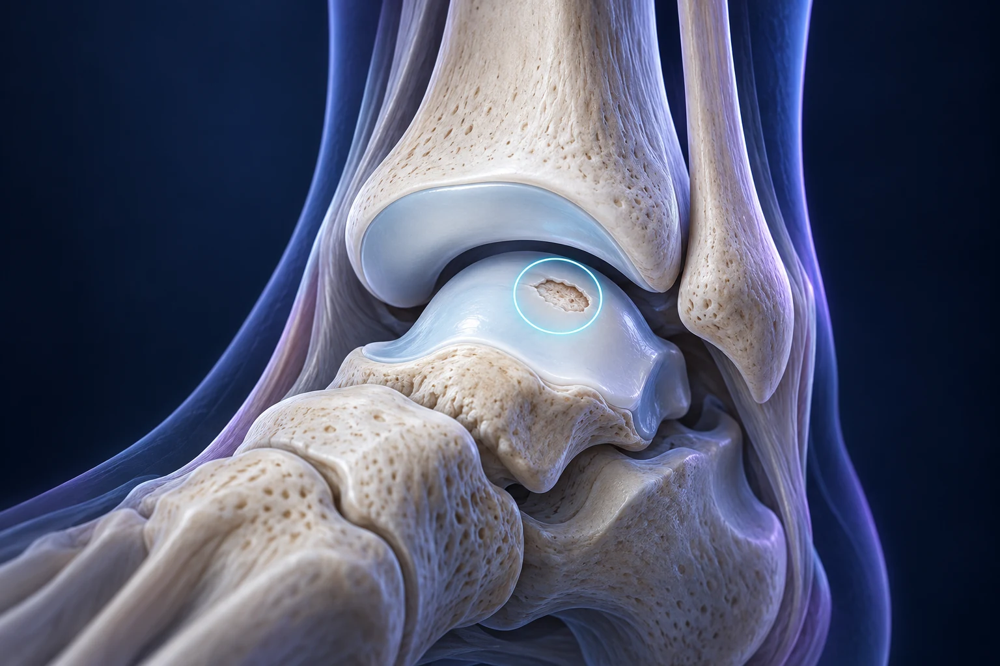

Lésion du cartilage du talus : pourquoi la cheville reste-t-elle douloureuse ?

Une douleur profonde de cheville qui persiste après une entorse peut parfois être liée à une lésion ostéochondrale du talus. Cette expression désigne une atteinte du cartilage et de l’os situé juste en dessous. Elle ne signifie pas automatiquement qu’il faut opérer : les symptômes, les caractéristiques de la lésion et la réponse aux premiers traitements guident la décision.
Où se trouve le talus ?
Le talus, autrefois appelé astragale, est un os situé entre la jambe et le reste du pied. Sa partie supérieure s’articule avec le tibia. Une lésion ostéochondrale peut toucher le revêtement cartilagineux, son support osseux ou les deux, parfois avec une cavité dans l’os ou un fragment instable. AOFAS–FootCareMD, lésions ostéochondrales du talus.
Imaginez une surface de glissement reposant sur un support : examiner seulement la surface ne suffit pas si le support est lui aussi fragilisé. Cette comparaison explique pourquoi le bilan ne se limite pas à mesurer une « fissure du cartilage ». La profondeur et l’état de l’os peuvent modifier la proposition thérapeutique.
Quels symptômes peuvent faire évoquer cette lésion ?
Une douleur lors des appuis, un gonflement récurrent ou des sensations d’accrochage peuvent conduire à rechercher une atteinte articulaire. Un blocage mérite un avis médical. Ces manifestations ne sont cependant pas spécifiques : les ligaments, les tendons ou d’autres structures peuvent également être responsables. Certaines lésions découvertes sur les images ne provoquent aucune gêne. AOFAS–FootCareMD, symptômes et évolution.
Essayez de différencier vos sensations. Une cheville qui se dérobe en terrain irrégulier ne raconte pas exactement la même histoire qu’une douleur profonde apparaissant après vingt minutes de marche. Notez aussi les gonflements, les blocages et leur contexte. Il n’est pas nécessaire de connaître le diagnostic pour apporter une description utile.
À quoi servent les examens ?
Les radiographies, l’IRM ou le scanner peuvent apporter des informations complémentaires selon la question posée. Le bilan cherche notamment à préciser l’étendue de l’atteinte et ses caractéristiques osseuses et cartilagineuses. Le chirurgien rapproche ces constatations de l’examen et de vos symptômes. AOFAS–FootCareMD, bilan d’une lésion du talus.
Apportez les images, et pas uniquement leur compte rendu, ainsi que les examens plus anciens disponibles. Pour comprendre le résultat, demandez que la zone concernée vous soit montrée. Les mots « œdème », « kyste » ou « fragment » méritent d’être expliqués dans votre cas : leur présence ne détermine pas, isolément, une technique opératoire.
Une arthroscopie est-elle toujours nécessaire ?
Une arthroscopie permet d’examiner l’intérieur de la cheville avec une caméra et d’y réaliser certains gestes. Elle peut être proposée pour une lésion symptomatique, mais son utilité dépend de ce qui doit être traité. Elle n’est pas une simple étape automatique après toute anomalie à l’IRM. Le geste effectué à l’intérieur de l’articulation compte autant que la voie d’accès. Royal United Hospitals Bath, lésion ostéochondrale du talus.
Lorsque vous discutez d’une intervention, demandez : s’agit-il de retirer un fragment gênant, de traiter une zone abîmée ou d’effectuer une reconstruction plus importante ? Deux personnes opérées « sous arthroscopie » peuvent recevoir des traitements différents et avoir des consignes d’appui différentes.
Quelles réparations peut-on envisager ?
Selon les lésions, les techniques peuvent chercher à stimuler une réparation ou à reconstruire la zone atteinte. Certaines procédures utilisent une membrane associée au traitement de l’os et du cartilage. Elles répondent à des indications précises et impliquent une protection postopératoire adaptée. Leur existence ne signifie pas qu’elles conviennent à toutes les lésions. Royal National Orthopaedic Hospital, réparation ostéochondrale et rééducation.
Il faut distinguer l’objectif recherché du résultat garanti. « Réparer le cartilage » ne veut pas dire retrouver immédiatement une articulation neuve. Demandez ce que le geste peut raisonnablement améliorer, ce qui restera incertain et quelles seraient les étapes suivantes si la douleur persistait. Une explication précise est plus utile qu’un nom de technique séduisant.
Pourquoi les suites peuvent-elles être longues ?
La protection d’une zone réparée et le retour des capacités fonctionnelles demandent une progression organisée. Les consignes d’appui, de mobilité et de rééducation dépendent du geste exact. Un programme publié par un établissement décrit son propre parcours ; il ne remplace pas la prescription remise pour votre cheville. Royal National Orthopaedic Hospital, principes de récupération.
Avant de décider, pensez aux déplacements quotidiens et à la disponibilité pour la kinésithérapie. Comment rejoindre votre domicile ? Pouvez-vous travailler temporairement autrement ? Qui peut vous aider si l’appui est limité ? Ces questions font partie de la préparation du traitement, et peuvent être abordées avant même de fixer une date.
Que préparer pour la consultation ?
Rassemblez la chronologie de la blessure, les examens, les traitements essayés et les activités qui restent limitées. La priorité est d’identifier la cause de vos symptômes puis de comparer les possibilités, sans attribuer toute douleur à la seule image du talus.
Le Dr François Lozach à Sète peut discuter avec vous du bilan et des options adaptées à votre cheville. En cas d’instabilité associée, l’article sur la stabilisation ligamentaire de cheville complète cette lecture.
Ces conseils sont d’ordre général et ne remplacent pas un avis médical personnalisé.